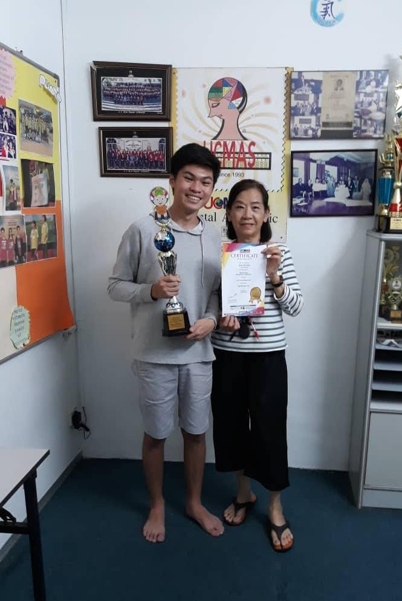

My accomplishments throughout my lifetime outside of school


Extra-curricular Achievements
Extra-curricular Achievements

Mental Arithmetic
I've been going for mental-arithmetic training for as long as i can remember, and it did really help in improving my general basics and foundations for math. However, i only began feeling interest in 2018 and 2019, and completed the training after a few years. To show and represent my growth and gratitude to my trainer, i've accomplished a few awards.
History: 2005-2019
3rd Placing for 19th UCMAS International Competition (2014)
2nd Runner Up for 24th UCMAS International Competition (2019)
— Universal Concept of Mental Arithmetic System (UCMAS)
Maths Competitions
Mathematics has been a huge impact in my life. However, it had a big impact to me during 2018 and 2019. These competitions valued time and problem solving skills which are qualities of modern critical thinker.
History: 2018-2019
Competed in the State Level Sunway Maths Competition
Qualified for the National Level Sunway Maths Competition
High Achievers Award for St Andrews Maths Competition
—University of St Andrews
Duke Of Edinburgh International Awards
The Duke of Edinburgh Awards is comprised of 3 categories: Bronze, Silver and Gold. Each is categorized by the amount of hours needed to spend on each task. Overall, there are 4 tasks: Voluntary Service, Skill, Physical Recreation and Adventurous Journey. The duration for Bronze is 6 months, Silver is 12 months and Gold is 18 months.
History: 2016-2018
Completed Bronze
Completed Silver
— Duke Of Edinburgh Awards